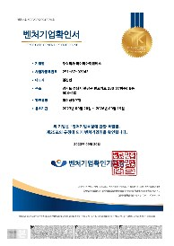
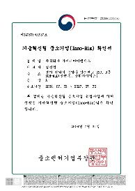
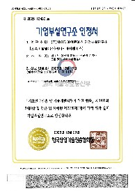
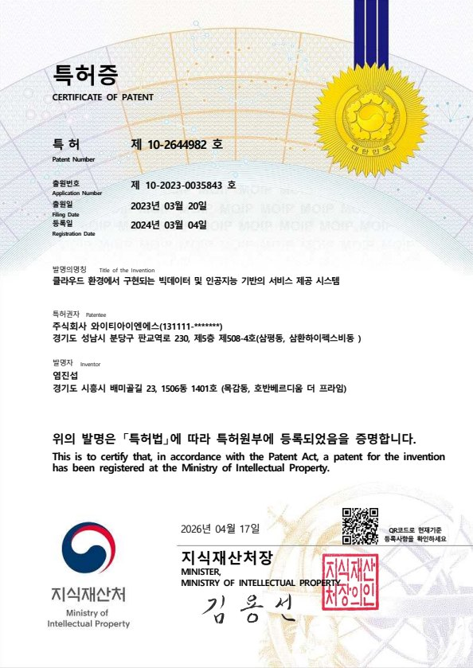
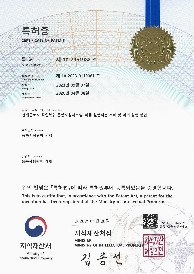

회사소개
2020년 설립 이후 공공·금융·에너지 전 분야로 사업영역을 넓혀온 통합 IT 서비스 전문기업입니다.
회사개요
㈜와이티아이엔에스(YTINS)는 검증된 기술력과 안정적인 재무구조를 바탕으로 지속 성장하는 작지만 강한 IT 서비스 기업입니다.
| 회사명 | 주식회사 와이티아이엔에스 (YTINS Co., Ltd.) |
|---|---|
| 대표자 | 염진섭 |
| 설립연도 | 2020년 |
| 사업분야 | 소프트웨어 개발 및 공급 (통합 IT 서비스) |
| 본사 | 경기도 성남시 분당구 판교역로 230, 삼환하이펙스 B동 508-4호 |
| 연락처 | Tel 031-698-2096 · Fax 0504-152-0871 service@ytins.co.kr |
CEO Message
기술은 빠르게 변하지만,
고객의 신뢰는 축적으로 만들어집니다.
YTINS는 화려한 약속 대신 완결된 결과로 말하는 회사입니다. 2020년 작은 팀에서 출발해 공공·금융·에너지 현장에서 34건이 넘는 프로젝트를 수행하며, "잘 만드는 것"을 넘어 "끝까지 책임지는 것"을 기준으로 삼아 왔습니다.
SI와 ITO로 다져온 운영의 내공 위에, 클라우드와 빅데이터·AI라는 새로운 축을 더했습니다. 검증된 오픈소스 기반 자체 플랫폼과 AI-네이티브 역량으로, 고객의 데이터가 비용이 아닌 자산이 되도록 만드는 것 — 그것이 지금 우리가 집중하는 일입니다.
규모보다 실력으로, 유행보다 본질로 승부하는 '작지만 강한 IT 서비스 기업'. YTINS는 앞으로도 고객의 다음 단계를 함께 설계하는 파트너로 곁에 있겠습니다.

History
2020년 설립 이후 공공·금융·에너지 전 분야로 사업영역을 확장하고 기술·파트너십 기반을 다져왔습니다.
- 특허등록 — 산재근로자 직업복귀 통합지원시스템 (서버·실행방법)
- LG CNS 파트너 등록
- Amazon Web Services MSP 파트너 등록
- 중소기업(소기업) 지정
- 사무실 이전 (현 삼환하이펙스 B508-4)
- 네이버 클라우드 MSP 파트너 등록
- 기술혁신형 중소기업(Inno-Biz) 확인
- 특허등록 — 클라우드 환경 기반 빅데이터·AI 서비스 제공 시스템
- CJ올리브네트웍스 파트너 등록
- 벤처기업 확인 (혁신성장유형)
- 기업부설연구소 인정 (과학기술정보통신부)
- 자본금 증자 (1,000만원 → 5,000만원)
- ㈜와이티아이엔에스 법인설립 (2020.10)
- 조달청 업체 등록 · 소프트웨어사업자 신고
- 직접생산증명원 등록
Organization
대표이사 직속의 기술전문위원회·기업부설연구소와 4개 사업본부 체계로 운영됩니다.
Certifications
기술력과 경영 안정성을 공식 인증기관으로부터 확인받았습니다.





YTINS Finance
㈜와이티아이엔에스는 2020년 설립 이후 안정적인 수익과 재무구조로 지속 성장하고 있는, 작지만 강한 IT 서비스 기업입니다. (2025년 기업 신용등급 BB+)
| 구분 (단위: 천원) | 2022년 | 2023년 | 2024년 | 2025년 |
|---|---|---|---|---|
| 유동자산 | 1,278,168 | 1,344,765 | 1,914,989 | 2,420,609 |
| 총 자산 | 1,367,240 | 1,435,501 | 2,006,292 | 2,566,330 |
| 유동부채 | 513,782 | 451,497 | 474,491 | 655,707 |
| 고정부채 | 500,000 | 580,000 | 1,000,000 | 1,200,000 |
| 당기 순이익 | 305,023 | 23,976 | 152,366 | 197,821 |
| 용역매출 (합계) | 2,601,768 | 3,013,767 | 5,042,056 | 6,514,806 |
※ 최근 4년간 재무지표 (2025년 매출 기준). 상세 재무제표는 별도 제공 가능합니다.